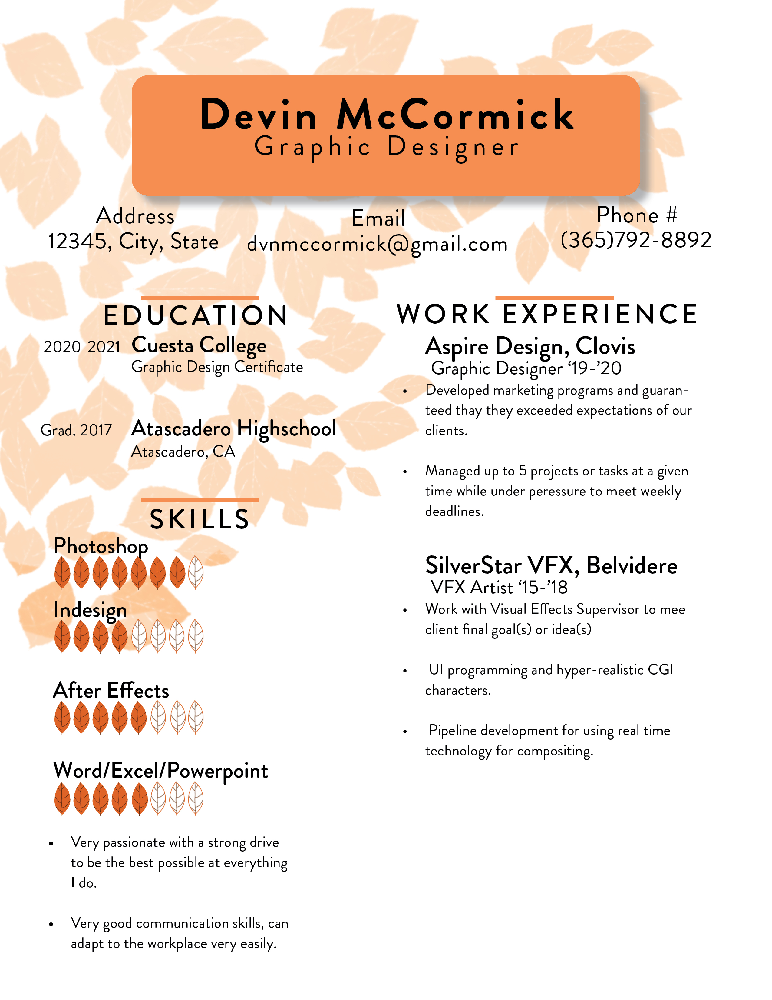
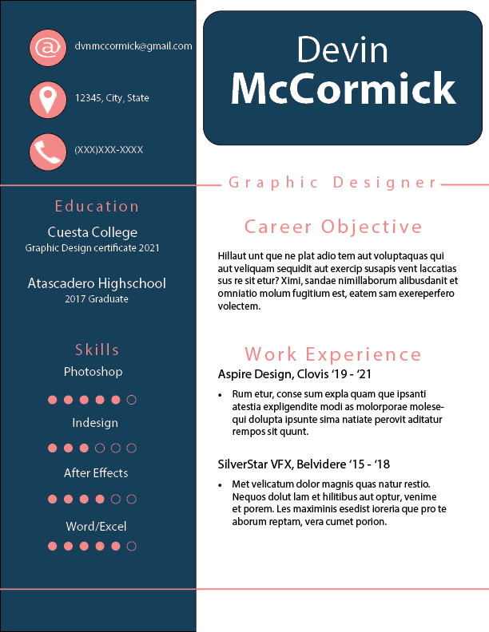

Twitter Header
This was the first thing I worked on after practicing in Photoshop. It's a simple header I made just for myself using assets from the popular indie game Hollow Knight as it was what I was playing at the time.

This was the first thing I worked on after practicing in Photoshop. It's a simple header I made just for myself using assets from the popular indie game Hollow Knight as it was what I was playing at the time.
While studying graphic design we were tasked with making personalized resumes! Mixing Indesign and Photoshop I came up with two seperate options for my resume, one being more professional and the other being a bit cuter but definitely a niche resume. Lots of things I would change design wise today but still fun to look back on.
 Most recent thing I've worked on is this website! Using html and css I was tasked with creating a personal website showcasing what I've learned so far in class! Very fun project and I'm looking forward to continuing to improve on this foundation in the future!